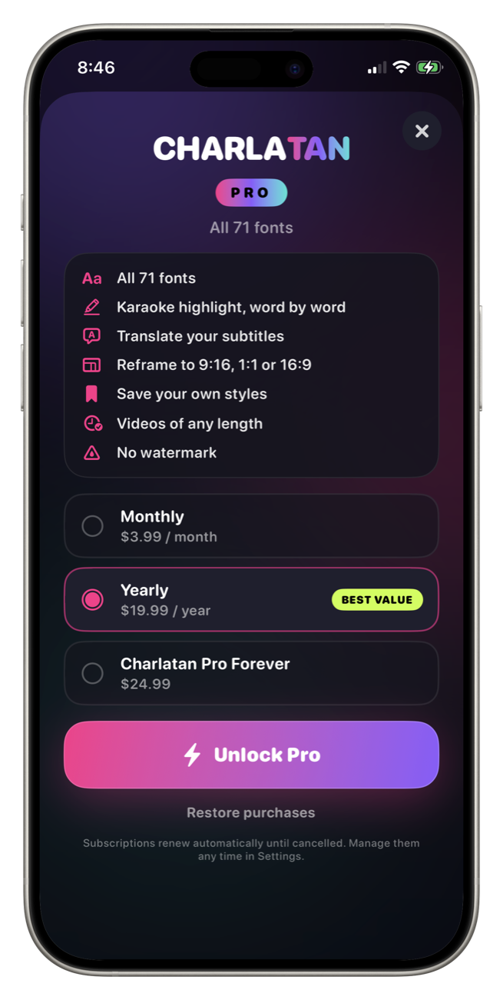

How to export captions without a watermarkCómo exportar subtítulos sin marca de agua
Almost every free caption app puts its own name on your video. It is the trade — you get the tool, they get a small advert on everything you post.Casi toda app gratuita de subtítulos te pone su nombre en el video. Es el trato — vos tenés la herramienta, ellos tienen un aviso chico en todo lo que publicás.
Whether that matters depends entirely on what you are making, and it is worth being clear-eyed about rather than assuming either way.Si eso importa o no depende enteramente de qué estés haciendo, y conviene mirarlo con claridad en vez de asumir cualquiera de las dos cosas.

When a watermark genuinely costs youCuándo una marca de agua te cuesta de verdad
- Client work. A logo that is not the client's on a video they paid for is a problem, every time.Trabajo para clientes. Un logo que no es el del cliente en un video que pagó es un problema, siempre.
- Anything you are using as a portfolio piece or an ad.Cualquier cosa que uses como pieza de portafolio o como publicidad.
- Reposting across platforms, where some algorithms have historically down-weighted video carrying another app's branding.Repostear entre plataformas, donde históricamente algunos algoritmos bajaron el alcance de video con la marca de otra app.
- Building a recognisable channel, where a competing mark in the corner works against the thing you are trying to build.Construir un canal reconocible, donde una marca ajena en la esquina juega en contra de lo que estás tratando de construir.
When it genuinely does notCuándo genuinamente no
If you are learning the tool, testing a format, or posting to friends, a small mark in a corner changes nothing. Paying to remove it before you know whether you will keep making videos is money spent on the wrong thing.Si estás aprendiendo la herramienta, probando un formato, o publicando para amigos, una marca chica en una esquina no cambia nada. Pagar para sacarla antes de saber si vas a seguir haciendo videos es plata gastada en lo que no era.
Make the first few, see whether the habit sticks, and decide after that.Hacé los primeros, mirá si el hábito queda, y decidí después.
What Charlatan's free tier actually includesQué incluye realmente la versión gratis de Charlatan
Free gives you automatic transcription, 15 fonts, the complete style editor and export. It is not a trial and it does not expire.La versión gratis te da transcripción automática, 15 tipografías, el editor de estilo completo y exportación. No es una prueba y no vence.
The export carries a small Charlatan mark in the top-left corner. Everything else about it — resolution, quality, the captions themselves — is identical to the paid export.La exportación lleva una marca chica de Charlatan arriba a la izquierda. Todo lo demás — resolución, calidad, los subtítulos en sí — es idéntico a la exportación paga.
How to do it in CharlatanCómo hacerlo en Charlatan
- Make a few videos on the free tier first. The mark sits in the top-left corner, so you can see exactly what it looks like on your own footage.Hacé unos videos primero en la versión gratis. La marca va arriba a la izquierda, así que ves exactamente cómo queda sobre tu propio material.
- If you decide it is in the way, open the Pro sheet from the editor.Si decidís que estorba, abrí la hoja de Pro desde el editor.
- Pro removes the watermark and also unlocks all 71 fonts, karaoke highlight, translation, reframing and saved styles — the watermark is not sold on its own.Pro saca la marca de agua y además desbloquea las 71 tipografías, el resaltado karaoke, la traducción, el reencuadre y los estilos guardados — la marca de agua no se vende por separado.
- Choose monthly, yearly, or the one-time lifetime payment if you would rather not have a subscription.Elegí mensual, anual, o el pago único de por vida si preferís no tener suscripción.
- Re-export anything you already made. The project is still there, so previous videos can be exported again clean.Volvé a exportar lo que ya hiciste. El proyecto sigue ahí, así que los videos anteriores se pueden exportar de nuevo limpios.
Questions people also askLo que también preguntan
Does a watermark reduce reach on TikTok or Instagram?¿Una marca de agua baja el alcance en TikTok o Instagram?
Platforms have historically preferred video that does not carry another app's branding, and TikTok's own watermark is well known to be down-weighted elsewhere. Treat it as a reason to remove it for serious posting, not as a guarantee either way.Las plataformas históricamente prefirieron video que no lleve la marca de otra app, y se sabe que la propia marca de TikTok pierde alcance en otros lados. Tomalo como una razón para sacarla si vas en serio, no como una garantía en ningún sentido.
Can I remove the watermark from videos I already exported?¿Puedo sacar la marca de agua de videos que ya exporté?
Not from the exported file itself, but you do not need to: the project is still in the app, so you can export it again without the mark once Pro is unlocked.Del archivo exportado no, pero no hace falta: el proyecto sigue en la app, así que lo podés exportar de nuevo sin la marca una vez que desbloqueás Pro.